1 Introduction
2 Literature Review
3 Data Preparation
The MC1 has the following data/documents:
- Historical Documents
- News Articles
- Resumes (Word documents)
- Email Headers (CSV File)
- Employee Records (XLSX File)
- Factbook - Kronos (Word document)
- Factbook - Tethys (Word document)
- GAStech Kronos Organization Chart (PDF Image)
- Map of Krono (Image)
3.1 News Article Data
First, we will load the following libraries for the data clean:
3.1.1 Merging the New Articles
The MC1 folder contains a folder News Articles. Within it are subfolders containing the 29 different news sources, within which are articles in a text format.
We will merge all of the new article’s contents into a tidy format for text processing later, this means that each row will represent one observation and each column, one variable.
The text file have been tagged as such:
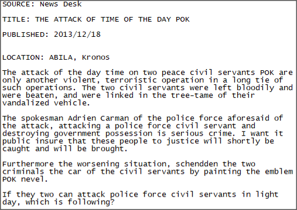
Running the following code chunk will give us the combined data:
curr_dir = c(dir(path = 'MC1/News Articles/'))
df.news = data.frame()
counter = 1
for (folder in curr_dir){
files_in_curr_dir <- c(list.files(path = paste('MC1/News Articles/', folder,
'/', sep='')))
#print(files_in_curr_dir)
for (file in files_in_curr_dir){
vector <- c()
chunk_text <- c()
for (i in as.vector(readLines(paste('MC1/News Articles/', folder,
'/', file, sep = '')))){
if (grepl("SOURCE:|LOCATION:|AUTHOR:|PUBLISHED:|TITLE:|NOTE:", i,
fixed = FALSE)){
vector <- c(vector,(i))
} else if(grepl("\\S+",i)){
chunk_text<- c(chunk_text,i)
}
}
chunk_text <- capture.output(cat(chunk_text))
chunk_text <- paste("TEXT:", chunk_text)
fileName <- c(paste("FILE:",file))
article <- c(fileName,vector,chunk_text)
textlist <- lapply(1:length(article),
function(j) data.frame(
caseno=counter,
rawdata=article[[j]],
stringsAsFactors = FALSE))
df <- do.call(rbind, textlist)
df[,c("type","entry")] <- str_trim(str_split_fixed(df$rawdata,":",2))
df <- df[,c("caseno","type","entry")]
df <- pivot_wider(df,
names_from = type,
values_from = entry)
df.news <- dplyr::bind_rows(df.news,df)
#print(paste(folder,file))
counter <- counter + 1
}
}
When running the above code chunk, the for-loop will be interrupted multiple times due to the following error:
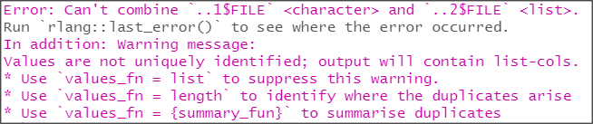
During the run of the code, we can check which file gives us the error by looking at the Global Environment section of the RStudio window as shown below:
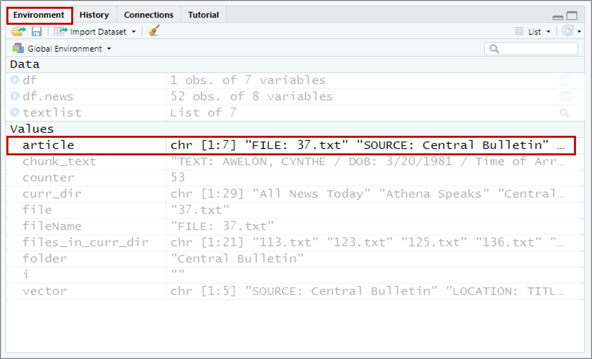
This tells us that the interrupting file is 37.txt in the Central Bulletin folder.
This error is a result of errored placement of the tags within the file. Opening up the file shown above we can see that there are multiple tags. As such, there is an attempt to concatenate a list and character, which is not possible.
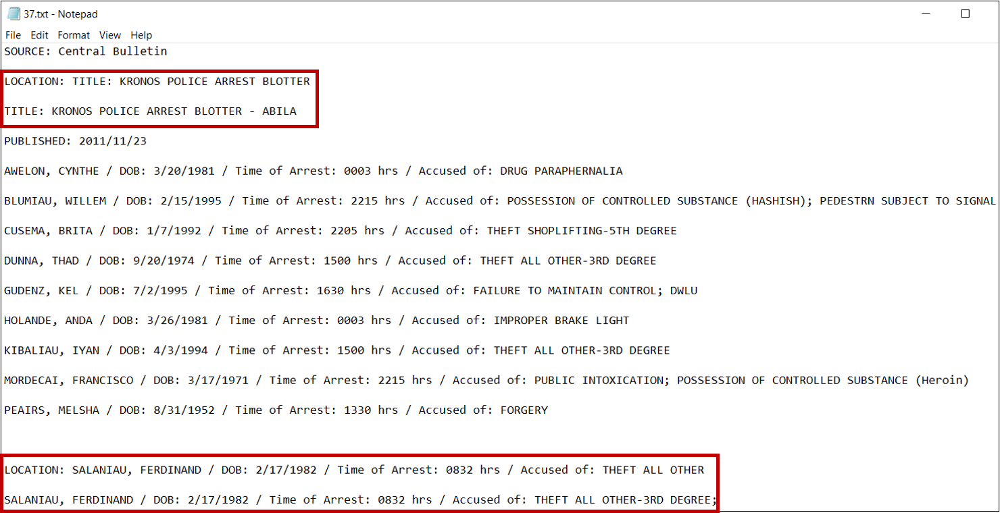
Upon running the entire code, the files that have the errors have been identified as:
- 37.txt – Central Bulletin
- 791.txt – Daily Pegasus
- 188.txt – News Online Today
- 52.txt – News Online Today
- 570.txt – News Online Today
- 36.txt – The Continent
- 127.txt – The Explainer
- 205.txt – The Explainer
Out of 845 files, there are 8 such files with error. Since there is a small number, we will edit ourselves.
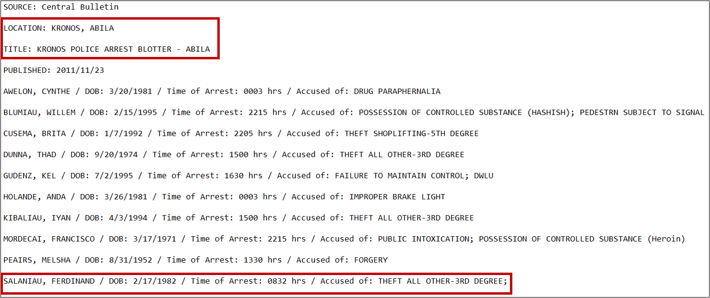
Once the files have been edited, re-run the first code chunk to get the final merged dataframe, df.news.
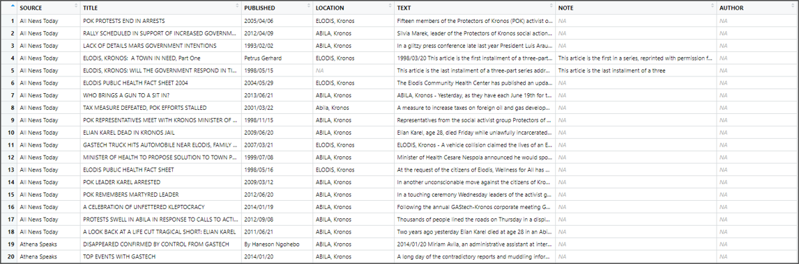
The dataframe, df.news, contains 845 observations of 9 variables, this tallies with the 845 news articles.
The columns caseno can be dropping using the following code:
df.news <- df.news %>% select(-caseno)
3.1.2 Editing the PUBLISHED column
The PUBLISHED column is not on in a date-time format. In addition to that, we can see that the PUBLISHED column has some odd entries.
Running the following code chunk, we can see that the total count of anomalies is 42 that are not in a date format that can be parsed (either yyyy/mm/dd or dd Month yyyy) by the lubridate library.
# This code tells us the total count of anomalies identified
df.news %>%
select(FILE, SOURCE, PUBLISHED) %>%
filter(str_detect(PUBLISHED,"/",negate=T)) %>%
filter(str_detect(PUBLISHED,"\\d+\\s\\w+\\s\\d+", negate = T)) %>%
summarise("Total Count of Anomalies" = n())
# This code tells us identifies the no of each error encountered
df.news %>%
select(FILE, SOURCE, PUBLISHED) %>%
filter(str_detect(PUBLISHED,"/",negate=T)) %>%
filter(str_detect(PUBLISHED,"\\d+\\s\\w+\\s\\d+", negate = T)) %>%
count("Type of Error" = PUBLISHED) %>%
rename(Count = n)
The output will look like so:
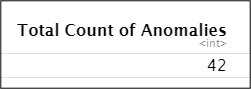
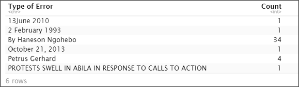
This is similar to the errors encountered during the merging of the articles, as the tags were probably wrongly placed. In addition to that, there are dates that are in different formats.
In order to see which files the errors occur in:
The output will look like so:

In addition to that, another file was noted to have error: 167.txt in the INTERNATIONAL TIMES.
Like earlier, we will manually edit the files and then re run the first code chunk.
The PUBLISHED column will then be changed into a date-time format shown below.
First, we will check if any cannot be parsed with the following code.
df.news %>%
mutate(PUBLISHED = parse_date_time(PUBLISHED, orders = c("%y%m%d","%d%m%y"))) %>%
filter(is.na(PUBLISHED)) %>%
select(FILE, SOURCE)
If the output is 0 rows, then we can assign it with the following code:
df.news <- df.news %>%
mutate(PUBLISHED = parse_date_time(PUBLISHED, orders = c("%y%m%d", "%d%m%y")))
All of the PUBLISHED column is in date-time format yyyy-mm-dd.
3.1.3 Editing the AUTHOR column
Running the following code chunk, we can see that By Haneson Ngohebo is separated due to the “by”.
df.news %>%
distinct(AUTHOR)
# A tibble: 11 x 1
AUTHOR
<chr>
1 <NA>
2 Petrus Gerhard
3 By Haneson Ngohebo
4 Maha Salo
5 Marcella Trapani
6 Cato Rossini, Marcella Trapani
7 Cato Rossini
8 Eva Thayer
9 Lelio Masin
10 Donato Petri
11 Haneson Ngohebo Hence, we will remove all prefixes.
df.news <- df.news %>%
mutate(AUTHOR = str_remove(AUTHOR, "By "))
df.news %>% distinct(AUTHOR)
# A tibble: 10 x 1
AUTHOR
<chr>
1 <NA>
2 Petrus Gerhard
3 Haneson Ngohebo
4 Maha Salo
5 Marcella Trapani
6 Cato Rossini, Marcella Trapani
7 Cato Rossini
8 Eva Thayer
9 Lelio Masin
10 Donato Petri 3.1.4 Editing the LOCATION column
The LOCATION columns also contain a few errors that are due to the tag error.
Running the code below, we can get the error values
df.news %>%
mutate(LOCATION = str_to_upper(LOCATION)) %>%
group_by(LOCATION) %>%
summarise(count = n()) %>%
arrange(desc(count))
The output of the above code chunk will be:
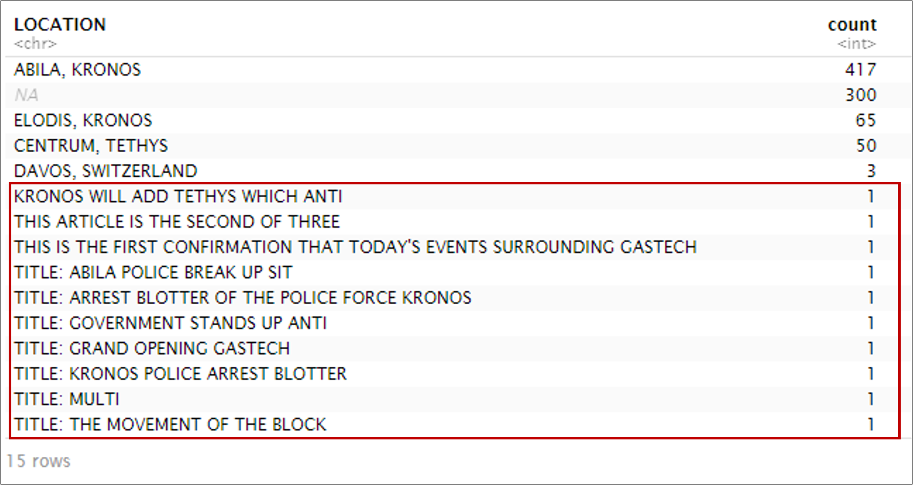
To identify and edit the files, the following code chunk will be applied:
The output of the above code chunk will be:
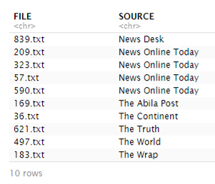
Once all the files have been rectified, re run the first code chunk.
Change all the locations to upper case.
df.news <- df.news %>%
mutate(LOCATION = str_to_upper(LOCATION))
df.news <- df.news %>% mutate(Text = str_replace_all(TEXT, "[[:punct:]]", " "))
3.2 Employee Emails
We will save the email conversation CSV as df.emails dataframe using the readr package
df.emails <- read_csv('MC1_data/email headers.csv')
Running the following code chunk, we will remove all the email domains so that only the name is retained and also to convert the Date column into a datetime format.
df.emails <- df.emails %>%
mutate(To = str_remove_all(To,"@gastech.com.kronos|@gastech.com.tethys")) %>%
mutate(From = str_remove_all(From,"@gastech.com.kronos|@gastech.com.tethys")) %>%
mutate(To = str_replace_all(To,"[.]"," ")) %>%
mutate(From = str_replace_all(From,"[.]"," ")) %>%
mutate(Date = parse_date_time(x = Date, orders =c("%m%d%y %H%M","%m%d%y")))
We will also split the Date column into two columns, to retrieve the Date and Time
3.3 Employee Bio-data
We will save the email conversation XLSX as df.emp dataframe using the readxl package
df.emp <- readxl::read_xlsx('MC1_data/EmployeeRecords.xlsx')
A second column with their joined names will be created
df.emp <- df.emp %>%
unite(FullName, FirstName, LastName, sep=" ", remove=FALSE)
4 Building the Visuals
The following libraries will be loaded:
Corpora Explorer - To Analyse the Texts by Source
all_news_data <- df.news %>%
rename("Date"="PUBLISHED")
all_news_data$Text <- paste(all_news_data$Date, "\n",
all_news_data$AUTHOR, "\n",
all_news_data$NOTE, "\n",
all_news_data$Text)
all_news_data <- all_news_data %>% select(-Date)
news_corpus <- prepare_data(
dataset = all_news_data,
date_based_corpus = F,
grouping_variable = "SOURCE")
explore(news_corpus)
Corpora Explorer - To Analyse the Texts by Date
all_news_data_2 <- df.news %>%
rename("Date"="PUBLISHED") %>%
mutate(Date = date(Date))
all_news_data_2$Text <- paste(all_news_data_2$SOURCE,": \n", all_news_data_2$AUTHOR, "\n", all_news_data_2$Text)
news_corpus_date <- prepare_data(
dataset = all_news_data_2,
date_based_corpus = T,
grouping_variable = "SOURCE")
explore(news_corpus_date)
Re-making the functions for building text visuals:
VisTextNet_e <- function(text_network, alpha = .25, label_degree_cut=0, betweenness=FALSE){
if (igraph::has.multiple(text_network))
stop("textnets does not yet support multiple edges")
if (is.null(V(text_network)$name)){
text_network <- set_vertex_attr(text_network, "name", value = as.character(1:vcount(text_network)))
}
#create network backbone
e <- cbind(igraph::as_data_frame(text_network)[, 1:2 ],
weight = E(text_network)$weight)
# in
w_in <- graph.strength(text_network, mode = "in")
w_in <- data.frame(to = names(w_in), w_in, stringsAsFactors = FALSE)
k_in <- degree(text_network, mode = "in")
k_in <- data.frame(to = names(k_in), k_in, stringsAsFactors = FALSE)
e_in <- e %>%
left_join(w_in, by = "to") %>%
left_join(k_in, by = "to") %>%
mutate(alpha_in = (1-(weight/w_in))^(k_in-1))
# out
w_out <- graph.strength(text_network, mode = "out")
w_out <- data.frame(from = names(w_out), w_out, stringsAsFactors = FALSE)
k_out <- degree(text_network, mode = "out")
k_out <- data.frame(from = names(k_out), k_out, stringsAsFactors = FALSE)
e_out <- e %>%
left_join(w_out, by = "from") %>%
left_join(k_out, by = "from") %>%
mutate(alpha_out = (1-(weight/w_out))^(k_out-1))
e_full <- left_join(e_in, e_out, by = c("from", "to", "weight"))
e_full <- e_full %>%
mutate(alpha = ifelse(alpha_in < alpha_out, alpha_in, alpha_out)) %>%
select(from, to, alpha)
E(text_network)$alpha <- e_full$alpha
pruned <- delete.edges(text_network, which(E(text_network)$alpha >= alpha))
pruned <- delete.vertices(pruned, which(degree(pruned) == 0))
# make degree for labelling most popular nodes
V(pruned)$degree <- degree(pruned)
# remove isolates
isolates <- V(pruned)[degree(pruned)==0]
pruned <- delete.vertices(pruned, isolates)
# calculate modularity for coloring
communities <- cluster_louvain(pruned)
#V(pruned)$modularity <- communities$membership
#print(communities$membership)
#calculate betweenness for sizing nodes
size <- 25 #default 25
if(betweenness){
size <- betweenness(pruned)
size <- size/0.95
}
V(pruned)$community <- communities$membership
V(pruned)$degree <- degree(pruned)
nodes <- data.frame(id = V(pruned)$name,
title = paste0("Degree of Node: <br>",
V(pruned)$degree),
group = V(pruned)$community,
size = size
)
nodes <- nodes[order(nodes$id, decreasing = F),]
nodes$shadow <- TRUE
#nodes$title <- "black"
nodes <- nodes %>% mutate(font.size = 20, font.weight= 900)
nodes$color.highlight.background <- "brown"
edges <- get.data.frame(pruned, what="edges")[1:2]
edges$value <- E(pruned)$weight
nodes$color.highlight.background <- "brown"
visNetwork(nodes, edges) %>%
visLayout(randomSeed = 123) %>%
visOptions(highlightNearest = TRUE,
nodesIdSelection = TRUE,
selectedBy = "group") %>%
visNodes(labelHighlightBold = T) %>%
#visEdges(color=list(color = 'black', highlight = "brown")) %>%
visIgraphLayout(layout = 'layout.davidson.harel') %>%
visInteraction(multiselect = TRUE)
}
TextComm_e <- function(text_network, alpha = .25, label_degree_cut=0, betweenness=FALSE){
if (igraph::has.multiple(text_network))
stop("textnets does not yet support multiple edges")
if (is.null(V(text_network)$name)){
text_network <- set_vertex_attr(text_network, "name", value = as.character(1:vcount(text_network)))
}
#create network backbone
e <- cbind(igraph::as_data_frame(text_network)[, 1:2 ],
weight = E(text_network)$weight)
# in
w_in <- graph.strength(text_network, mode = "in")
w_in <- data.frame(to = names(w_in), w_in, stringsAsFactors = FALSE)
k_in <- degree(text_network, mode = "in")
k_in <- data.frame(to = names(k_in), k_in, stringsAsFactors = FALSE)
e_in <- e %>%
left_join(w_in, by = "to") %>%
left_join(k_in, by = "to") %>%
mutate(alpha_in = (1-(weight/w_in))^(k_in-1))
# out
w_out <- graph.strength(text_network, mode = "out")
w_out <- data.frame(from = names(w_out), w_out, stringsAsFactors = FALSE)
k_out <- degree(text_network, mode = "out")
k_out <- data.frame(from = names(k_out), k_out, stringsAsFactors = FALSE)
e_out <- e %>%
left_join(w_out, by = "from") %>%
left_join(k_out, by = "from") %>%
mutate(alpha_out = (1-(weight/w_out))^(k_out-1))
e_full <- left_join(e_in, e_out, by = c("from", "to", "weight"))
e_full <- e_full %>%
mutate(alpha = ifelse(alpha_in < alpha_out, alpha_in, alpha_out)) %>%
select(from, to, alpha)
E(text_network)$alpha <- e_full$alpha
pruned <- delete.edges(text_network, which(E(text_network)$alpha >= alpha))
pruned <- delete.vertices(pruned, which(degree(pruned) == 0))
# make degree for labelling most popular nodes
V(pruned)$degree <- degree(pruned)
# remove isolates
isolates <- V(pruned)[degree(pruned)==0]
pruned <- delete.vertices(pruned, isolates)
# calculate modularity for coloring
communities <- cluster_louvain(pruned)
#V(pruned)$modularity <- communities$membership
#print(communities$membership)
#calculate betweenness for sizing nodes
size <- 25 #default 25
if(betweenness){
size <- betweenness(pruned)
size <- size/0.95
}
V(pruned)$community <- communities$membership
output <- data.frame(cbind(communities$names, communities$membership))
names(output)<-c("SOURCE","Membership")
return(output)
}
4.1 Building the Visuals for Question 1
common_words <- df.news %>%
unnest_tokens(word,Text) %>%
anti_join(stop_words) %>%
count(word) %>%
filter(n>200) %>%
mutate(lexicon = "CUSTOM")
stop_words2 <- stop_words %>%
bind_rows(common_words)
clean_news_before <- df.news %>%
filter(1998 <= year(PUBLISHED),
year(PUBLISHED)<2014) %>%
select(SOURCE, Text) %>%
mutate(Text = gsub("\\d+", " ", Text)) %>%
mutate(Text = str_to_lower(Text)) %>%
unnest_tokens(word, Text) %>%
anti_join(stop_words2) %>%
group_by(SOURCE) %>%
summarise(word = paste(word, collapse = ","))
clean_news_2014 <- df.news %>%
filter(year(PUBLISHED)==2014) %>%
select(SOURCE, Text) %>%
mutate(Text = gsub("\\d+", " ", Text)) %>%
mutate(Text = str_to_lower(Text)) %>%
unnest_tokens(word, Text) %>%
anti_join(stop_words2) %>%
group_by(SOURCE) %>%
summarise(word = paste(word, collapse = ","))
Correlation Plot
clean_news_before_count <- df.news %>%
filter(1998 <= year(PUBLISHED),
year(PUBLISHED)<2014) %>%
select(SOURCE, Text) %>%
mutate(Text = gsub("\\d+", " ", Text)) %>%
mutate(Text = str_to_lower(Text)) %>%
unnest_tokens(word, Text) %>%
anti_join(stop_words2) %>%
group_by(SOURCE, word) %>%
summarise(count = n())
newsgroup_cors <- clean_news_before_count %>%
pairwise_cor(SOURCE,
word,
count,
sort = TRUE)
ggplot(newsgroup_cors) +
geom_tile(aes(x=item1, y=item2, fill=correlation)) +
theme(axis.text.x = element_text(angle = 90,
vjust = 0.5,
hjust=1)) +
paletteer::scale_fill_paletteer_c("viridis::plasma") +
labs(x = "",
y=" ",
title = "Correlations of New Sources from 1998 to 2014")
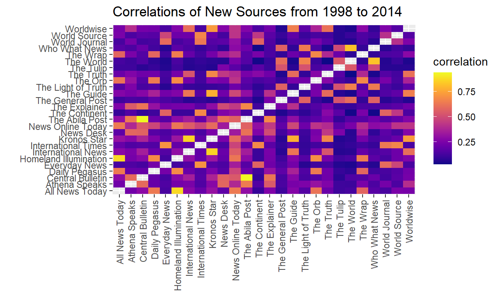
clean_news_2014_count <- df.news %>%
filter(year(PUBLISHED) == 2014, month(PUBLISHED)==1) %>%
select(SOURCE, Text) %>%
mutate(Text = gsub("\\d+", " ", Text)) %>%
mutate(Text = str_to_lower(Text)) %>%
unnest_tokens(word, Text) %>%
anti_join(stop_words2) %>%
group_by(SOURCE, word) %>%
summarise(count = n())
newsgroup_cors_2014 <- clean_news_2014_count %>%
pairwise_cor(SOURCE,
word,
count,
sort = TRUE)
ggplot(newsgroup_cors_2014) +
geom_tile(aes(x=item1, y=item2, fill=correlation)) +
theme(axis.text.x = element_text(angle = 90,
vjust = 0.5,
hjust=1)) +
paletteer::scale_fill_paletteer_c("viridis::plasma") +
labs(x = "",
y=" ",
title = "Correlations of New Sources in 2014")
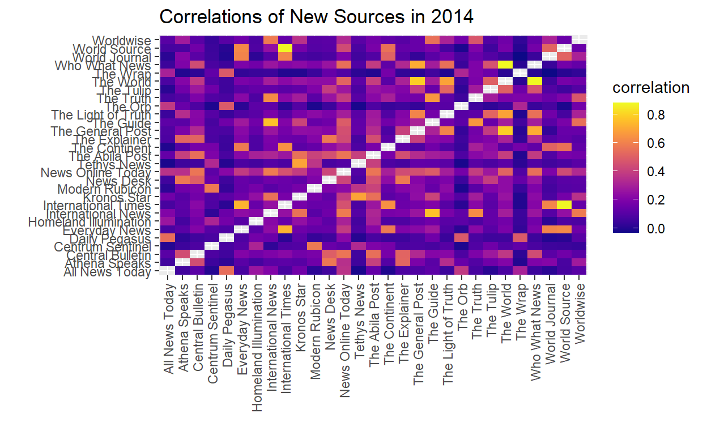
text_grouped <- clean_news_before %>%
group_by(SOURCE)
news_before <- PrepText(text_grouped,
groupvar = "SOURCE",
textvar = "word",
node_type = "groups",
tokenizer = "words",
pos = "nouns",
remove_stop_words = TRUE,
compound_nouns = TRUE)
text_network_before <- CreateTextnet(news_before)
set.seed(390)
VisTextNet_e(text_network_before, label_degree_cut = 0, betweenness = T)
VisTextNet_e(text_network_before)
text_grouped2 <- clean_news_2014 %>% group_by(SOURCE)
new_2014 <- PrepText(text_grouped2,
groupvar = "SOURCE",
textvar = "word",
node_type = "groups",
tokenizer = "words",
pos = "nouns",
remove_stop_words = TRUE,
compound_nouns = TRUE)
text_network_2014 <- CreateTextnet(new_2014)
VisTextNet_e(text_network_2014, label_degree_cut = 0)
VisTextNet_e(text_network_2014,label_degree_cut = 0,betweenness = T)
N Grams
wc_comms <- TextComm_e(text_network = text_network_before)
g_before_ngrams <- df.news %>%
filter(1998 <= year(PUBLISHED),
year(PUBLISHED)<2014) %>%
select(SOURCE, Text) %>%
mutate(Text = gsub("\\d+", " ", Text)) %>%
mutate(Text = str_to_lower(Text)) %>%
unnest_tokens(word, Text) %>%
anti_join(stop_words2) %>%
group_by(SOURCE) %>%
summarise(word = paste(word, collapse = ",")) %>%
ungroup() %>%
unnest_tokens(word, word, token="ngrams", n=2) %>%
filter(word != 'NA') %>%
separate(word, c("word1", "word2"), sep = " ") %>%
group_by(SOURCE, word1, word2) %>%
summarise(n=n()) %>%
ungroup() %>%
group_by(SOURCE) %>%
top_n(n=8, wt=n) %>%
relocate(SOURCE, .after = last_col()) %>%
rename("from"="word1",
"to"="word2",
"value"="n",
"group"="SOURCE")
add <- g_before_ngrams %>%
inner_join(wc_comms, by=c("group" = "SOURCE"))
data_1 <- add %>%
filter(Membership ==1) %>%
graph_from_data_frame() %>%
toVisNetworkData()
visNetwork(data_1$nodes,data_1$edges) %>%
visEdges(arrows = "middle") %>%
visIgraphLayout() %>%
visNodes(font = list(size =30))
data_2 <- add %>%
filter(Membership ==2) %>%
graph_from_data_frame() %>%
simplify() %>%
toVisNetworkData()
visNetwork(data_2$nodes,data_2$edges) %>%
visEdges(arrows = "middle") %>%
visIgraphLayout() %>%
visNodes(font = list(size =30))
data_3 <- add %>%
filter(Membership ==3) %>%
graph_from_data_frame() %>%
toVisNetworkData()
visNetwork(data_3$nodes,data_3$edges) %>%
visEdges(arrows = "middle") %>%
visIgraphLayout() %>%
visNodes(font = list(size =30))
data_4 <- add %>%
filter(Membership ==4) %>%
graph_from_data_frame() %>%
toVisNetworkData()
visNetwork(data_4$nodes,data_4$edges) %>%
visEdges(arrows = "middle") %>%
visIgraphLayout()%>%
visNodes(font = list(size =30))
data_5 <- add %>%
filter(Membership ==5) %>%
graph_from_data_frame() %>%
toVisNetworkData()
visNetwork(data_5$nodes,data_5$edges) %>%
visEdges(arrows = "middle") %>%
visIgraphLayout() %>%
visNodes(font = list(size =30))
wc_comms_2 <- TextComm_e(text_network = text_network_2014)
g_2014_ngrams <- df.news %>%
filter(year(PUBLISHED)==2014) %>%
select(SOURCE, Text) %>%
mutate(Text = gsub("\\d+", " ", Text)) %>%
mutate(Text = str_to_lower(Text)) %>%
unnest_tokens(word, Text) %>%
anti_join(stop_words2) %>%
group_by(SOURCE) %>%
summarise(word = paste(word, collapse = ",")) %>%
ungroup() %>%
unnest_tokens(word, word, token="ngrams", n=2) %>%
filter(word != 'NA') %>%
separate(word, c("word1", "word2"), sep = " ") %>%
group_by(SOURCE, word1, word2) %>%
summarise(n=n()) %>%
ungroup() %>%
group_by(SOURCE) %>%
top_n(n=2, wt=n) %>%
relocate(SOURCE, .after = last_col()) %>%
rename("from"="word1",
"to"="word2",
"value"="n",
"group"="SOURCE")
add2 <- g_2014_ngrams %>%
inner_join(wc_comms_2, by=c("group" = "SOURCE"))
data<- add2 %>%
filter(Membership ==1) %>%
graph_from_data_frame() %>%
toVisNetworkData()
visNetwork(data$nodes,data$edges) %>% visEdges(arrows = "middle")
data<- add2 %>%
filter(Membership ==2) %>%
graph_from_data_frame() %>%
simplify() %>%
toVisNetworkData()
visNetwork(data$nodes,data$edges) %>% visEdges(arrows = "middle")
data<- add2 %>%
filter(Membership ==3) %>%
graph_from_data_frame() %>%
toVisNetworkData()
#data$nodes$color <- "yellow"
visNetwork(data$nodes,data$edges) %>% visEdges(arrows = "middle")
data<- add2 %>%
filter(Membership ==4) %>%
graph_from_data_frame() %>%
toVisNetworkData()
visNetwork(data$nodes,data$edges) %>% visEdges(arrows = "middle")
data<- add2 %>%
filter(Membership ==5) %>%
graph_from_data_frame() %>%
toVisNetworkData()
visNetwork(data$nodes,data$edges) %>% visEdges(arrows = "middle")
author_links <- df.news %>%
group_by(SOURCE,AUTHOR) %>%
summarise(Count = n()) %>%
inner_join(wc_comms, by=c("SOURCE")) %>%
drop_na(AUTHOR) %>%
rename("from" = "AUTHOR",
"to"="SOURCE",
"value"="Count")
g_author <- graph_from_data_frame(author_links, directed=F)
data_author <- toVisNetworkData(g_author)
data_author$nodes$color <- ifelse(data_author$nodes$id %in% c("The Explainer",
"Athena Speaks",
"News Desk",
"The Abila Post",
"Kronos Star",
"News Online Today",
"Homeland Illumination",
"All News Today"),
"#e88bc3",
"#b7e697")
data_author$edges$color = "grey"
visNetwork(data_author$nodes, data_author$edges) %>%
visIgraphLayout() %>%
visNodes(font = list(size =18))
location_links <- df.news %>%
group_by(SOURCE,LOCATION) %>%
summarise(Count = n()) %>%
rename("from" = "LOCATION",
"to"="SOURCE",
"value"="Count")
g_loc <- graph_from_data_frame(location_links, directed=F)
data_loc <- toVisNetworkData(g_loc)
data_loc$nodes$color <- ifelse(data_loc$nodes$id %in% c("NA",
"ABILA, KRONOS",
"ELODIS, KRONOS",
"DAVOS,SWITZERLAND",
"CENTRUM, TETHYS"
),
"#e88bc3",
"#b7e697")
data_loc$edges$color = "grey"
visNetwork(data_loc$nodes, data_loc$edges) %>%
visIgraphLayout("layout.davidson.harel") %>%
visNodes(font = list(size =18, weight=3)) %>%
visOptions(nodesIdSelection = T, highlightNearest = list(enabled = T, degree = 0))
reorder_within <- function(x, by, within, fun = mean, sep = "___", ...) {
new_x <- paste(x, within, sep = sep)
stats::reorder(new_x, by, FUN = fun)
}
scale_x_reordered <- function(..., sep = "___") {
reg <- paste0(sep, ".+$")
ggplot2::scale_x_discrete(labels = function(x) gsub(reg, "", x), ...)
}
scale_y_reordered <- function(..., sep = "___") {
reg <- paste0(sep, ".+$")
ggplot2::scale_y_discrete(labels = function(x) gsub(reg, "", x), ...)
}
tf_idf <- df.news %>%
filter(1998 <= year(PUBLISHED),
year(PUBLISHED)<2014) %>%
mutate(Text = gsub("\\d+", " ", Text)) %>%
mutate(Text = str_to_lower(Text)) %>%
unnest_tokens(word, Text) %>%
anti_join(stop_words2) %>%
group_by(SOURCE, word) %>%
count() %>%
ungroup() %>%
bind_tf_idf(word, SOURCE, n) %>%
group_by(SOURCE) %>%
top_n(7,wt=tf_idf)
com_tf_idf <- inner_join(tf_idf,
wc_comms,
by=c("SOURCE"))
p<- com_tf_idf %>%
ggplot(aes(reorder_within(word,
tf_idf,
SOURCE),
tf_idf,
fill = Membership)) +
geom_bar(stat = 'identity',color='black', size=0.1) +
scale_x_reordered() +
coord_flip() +
facet_wrap(~SOURCE, scales = "free_y", ncol = 7) +
scale_fill_manual(values=c("1"='#97c2fc',
"2"="#7be141",
"3"="#ffff00",
"4"='#fb7e81',
"5"='#eb7df4')) +
labs(x='',y='', title = "TF-IDF") +
theme(axis.title.x = element_blank(),
axis.text.x = element_blank(),
axis.ticks.x = element_blank(),
panel.background = element_rect(fill="white"),
strip.background =element_rect(fill="white"),
plot.title = element_text(size=16, margin=margin(0,0,5,0), hjust=0.5)
)
p
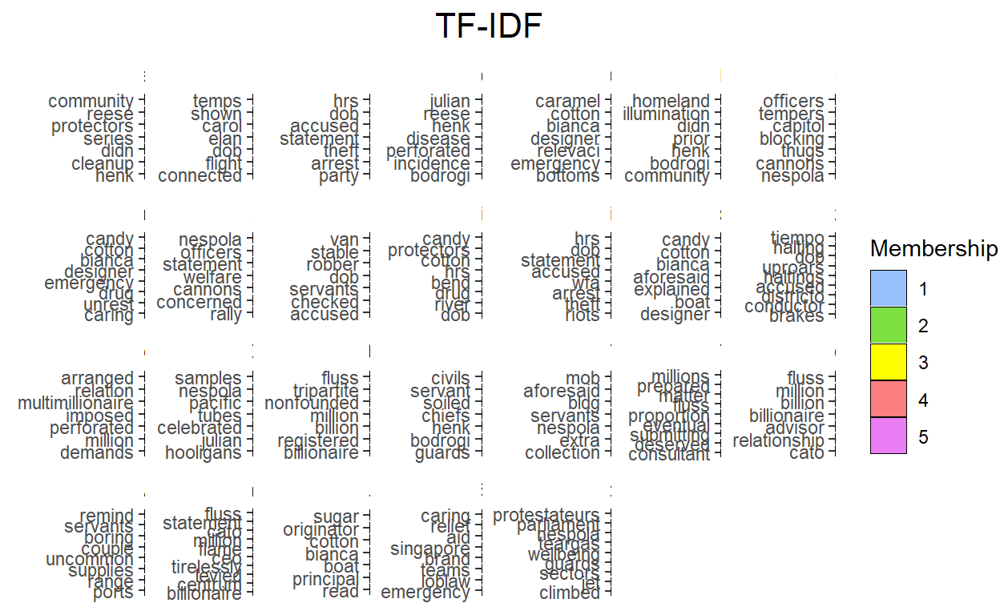
df.news %>%
filter(1998 <= year(PUBLISHED), year(PUBLISHED)<2014) %>%
unnest_tokens(word,Text) %>%
filter(!(SOURCE %in% c("Tethys News", "Centrum Sentinel", "Modern Rubicon"))) %>%
group_by(SOURCE) %>%
count(FILE, SOURCE) %>%
summarise(avg_word = mean(n)) %>%
ungroup() %>%
left_join(wc_comms) %>%
arrange(Membership, desc(avg_word)) %>%
mutate(SOURCE2 = factor(SOURCE, levels=SOURCE)) %>%
ggplot(aes(avg_word,SOURCE2,fill=Membership)) +
geom_col(color='black', size=0.5) +
scale_fill_manual(values=c("1"='#97c2fc',
"2"="#7be141",
"3"="#ffff00",
"4"='#fb7e81',
"5"='#eb7df4')) +
labs(x = "Average No. of Words",
y = element_blank(),
title = "Average No. of Words in each News Source") +
theme(panel.background = element_rect(fill="white"),
panel.grid.major.x = element_line("#d6d6d6"),
axis.text = element_text(size = 10, color="black"),
plot.title = element_text(size=15, margin=margin(0,0,30,0))
) +
ggsave('images/5-1-2.png')
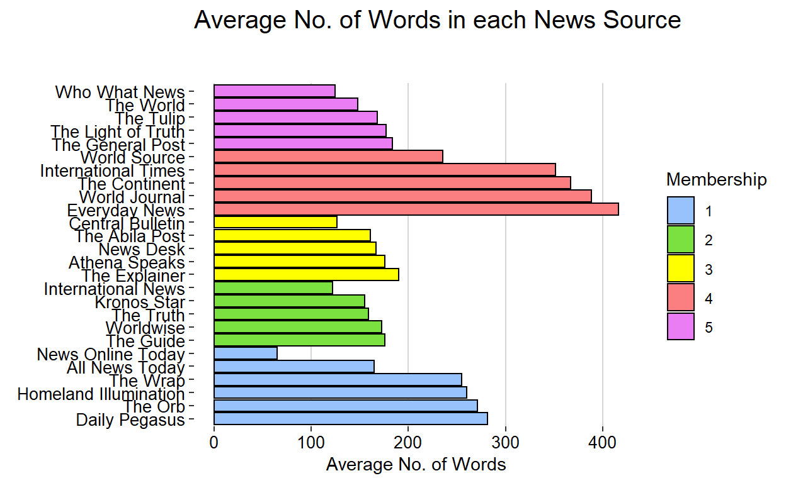
4.2 Building the Visuals for Question 2
g_before_ngrams2 <- df.news %>%
filter(1998 <= year(PUBLISHED),
year(PUBLISHED)<2014) %>%
select(SOURCE, Text) %>%
mutate(Text = gsub("\\d+", " ", Text)) %>%
mutate(Text = str_to_lower(Text)) %>%
unnest_tokens(word, Text) %>%
anti_join(stop_words) %>%
group_by(SOURCE) %>%
summarise(word = paste(word, collapse = ",")) %>%
ungroup() %>%
unnest_tokens(word, word, token="ngrams", n=2) %>%
filter(word != 'NA') %>%
separate(word, c("word1", "word2"), sep = " ") %>%
group_by(SOURCE, word1, word2) %>%
summarise(n=n()) %>%
ungroup() %>%
group_by(SOURCE) %>%
top_n(n=50, wt=n) %>%
relocate(SOURCE, .after = last_col()) %>%
rename("from"="word1",
"to"="word2",
"value"="n",
"group"="SOURCE")
n <- g_before_ngrams2 %>%
ungroup() %>%
select(from, to, group) %>%
pivot_longer(cols=c("from","to")) %>%
left_join(get_sentiments("bing"), by=c("value"="word")) %>%
replace_na(replace = list(sentiment = "none")) %>%
mutate(color = ifelse(sentiment=="negative", "blue",
ifelse(sentiment=="none", "grey",
"red"))) %>%
select(value, color) %>%
rename("id" = "value") %>%
group_by(id,color) %>%
summarise(n=n())
for (i in unique(g_before_ngrams2$group)){
e <- g_before_ngrams2 %>%
filter(group ==i)
n <- e %>%
ungroup() %>%
select(from, to, group) %>%
pivot_longer(cols=c("from","to")) %>%
left_join(get_sentiments("bing"), by=c("value"="word")) %>%
replace_na(replace = list(sentiment = "none")) %>%
mutate(color = ifelse(sentiment=="negative", "blue",
ifelse(sentiment=="none", "grey",
"red"))) %>%
select(value, color) %>%
rename("id" = "value") %>%
group_by(id,color) %>%
summarise(n=n())
n$label <- n$id
p<-visNetwork(n=n,
edges = e,
main = list(text = paste("News Source: ",i),
style = "font-family:Verdana;font-weight:600;color:#000000;font-size:20px;text-align:center;")
) %>%
visEdges(arrows = "middle") %>%
visNodes(font = list(size =34, style="font-weight:600")) %>%
visIgraphLayout(physics = F) %>%
visOptions(highlightNearest = T,
nodesIdSelection = T) %>%
visInteraction(multiselect = TRUE)
show(p)
}
for (i in unique(g_before_ngrams2$group)){
data <- g_before_ngrams2 %>%
filter(group ==i) %>%
graph_from_data_frame() %>%
simplify() %>%
toVisNetworkData()
p <- visNetwork(data$nodes,
data$edges, main=i
)%>%
visEdges(arrows = "middle") %>%
visNodes(size = 30,font = list(size =30) ) %>%
visIgraphLayout()
show(p)
}
dtm_corpus <- df.news %>%
filter(1998 <= year(PUBLISHED),
year(PUBLISHED)<2014) %>%
select(SOURCE, Text) %>%
mutate(Text = gsub("\\d+", " ", Text)) %>%
mutate(Text = str_to_lower(Text)) %>%
unnest_tokens(word, Text) %>%
anti_join(stop_words) %>%
group_by(SOURCE, word) %>%
summarise(count = n()) %>%
inner_join(wc_comms)
for (i in unique(dtm_corpus$Membership)){
dtm_model <- dtm_corpus %>%
filter(Membership==i) %>%
cast_dtm(SOURCE, word, count)
lda_topics <- LDA(dtm_model,
k=2,
method="Gibbs",
control = list(seed=333)) %>%
tidy(matrix = "beta")
sources <- wc_comms %>%
filter(Membership==i) %>%
select(SOURCE)
word_probs <- lda_topics %>%
group_by(topic) %>%
top_n(10, beta) %>%
ungroup() %>%
mutate(term2 = fct_reorder(term, beta)) # %>%
#ggplot(aes(term2, beta, fill = as.factor(topic))) +
#geom_col(show.legend=F) +
#labs(x="",
# y="Sources",
# title=paste(unlist(sources), collapse = ', '))+
#facet_wrap(~topic, scales = "free_y") +
#coord_flip() +
#theme(
# panel.background = element_rect(fill="white"),
# panel.grid.major.x = element_line("#d6d6d6"),
# axis.text.x = element_text(color='black'),
# plot.title = element_text(size=12, margin=margin(0,0,30,0)),
# strip.background = element_rect(fill="white",colour = "black")
#)
p <- ggwordcloud(word_probs$term,
freq = word_probs$beta,
colors = word_probs$topic) +
labs(title = paste("Wordcloud for Cluster: ", i),
subtitle = paste(unlist(sources), collapse = ', ')) +
theme(plot.title = element_text(hjust = 0.5, size=14),
plot.subtitle = element_text(hjust = 0.5, size=12))
#show(p)
ggsave(paste('images/5-1-6-',i,".png",sep = ''))
}
4.3 Building the Visuals for Question 3
links <- df.emails %>%
mutate(To = str_split(To,pattern=',')) %>%
unnest_longer(To) %>%
mutate(To = str_trim(To),
From = str_trim(From)) %>%
filter(!(From==To)) %>%
group_by(From, To) %>%
summarise(count=n()) %>%
rename(weight = count)
nodes_df <- data.frame(id = unique(c(links$From, links$To))) %>%
left_join(df.emp, by = c("id"="FullName")) %>%
select(c(id,
CurrentEmploymentTitle,
CurrentEmploymentType)) %>%
rename(title = CurrentEmploymentTitle,
department = CurrentEmploymentType) %>%
replace_na(list(department = "Executive",
title = "CEO"))
Department Network:
email_network <- graph_from_data_frame(d = links,
vertices = nodes_df,
directed = T
)
nodes <- data.frame(id = V(email_network)$name,
title = V(email_network)$name,
group = V(email_network)$department)
edges <- get.data.frame(email_network, what="edges")[1:2]
edges$value <- links$weight
nodes$color.highlight.background <- "brown"
p <- visNetwork(nodes, edges) %>%
visOptions(highlightNearest = list(enabled = T, degree = 1),
nodesIdSelection = T,
selectedBy = "group"
) %>%
visEdges(arrows = "middle",width = 0.5) %>%
visLayout(randomSeed = 123) %>%
#visPhysics(stabilization = 5,
# barnesHut = list(springLength =230),
# forceAtlas2Based = list(gravitaionalConstant = -100,
# centralGravity = 0.5))
visIgraphLayout(layout = 'layout.davidson.harel')
p
Centrality Based Networks
Sizing by Betweeness Centralityemail_network3 <- graph_from_data_frame(d = links,
vertices = nodes_df,
directed = F)
size <- betweenness(email_network3)
email_network3 <- simplify(email_network3)
nodes2 <- data.frame(id = V(email_network3)$name,
title = V(email_network3)$title,
group = factor(V(email_network3)$department),
size = size/3)
edges2 <- get.data.frame(email_network3, what="edges")[1:2]
nodes2$color.highlight.background <- "brown"
q<-visNetwork(nodes2, edges2) %>%
visOptions(highlightNearest = list(enabled = T, degree=0),
nodesIdSelection = T,
selectedBy = "group"
) %>%
visLayout(randomSeed = 123) %>%
visIgraphLayout(layout = 'layout.davidson.harel')
q
email_network4 <- graph_from_data_frame(d = links,
vertices = nodes_df,
directed = T)
size <- (eigen_centrality(email_network4)$vector) * 50
nodes3 <- data.frame(id = V(email_network4)$name,
title = V(email_network4)$title,
group = factor(V(email_network4)$department),
size = size)
edges3 <- get.data.frame(email_network4, what="edges")[1:2]
visNetwork(nodes3, edges3) %>%
visOptions(highlightNearest = TRUE,
nodesIdSelection = T,
selectedBy = "group"
) %>%
visEdges(arrows = "middle") %>%
visLayout(randomSeed = 123) %>%
visIgraphLayout(layout = 'layout.davidson.harel') %>%
visLegend(enabled = T)
email_network4 <- graph_from_data_frame(d = links,
vertices = nodes_df,
directed = FALSE)
#email_network4 <- simplify(email_network4)
E(email_network4)$width <- closeness(email_network4) * 1000
nodes3 <- data.frame(id = V(email_network4)$name,
title = V(email_network4)$title,
group = factor(V(email_network4)$department),
size = size)
#nodes <- nodes[order(nodes$id, decreasing = F),]
#nodes2$color.highlight.background <- "brown"
edges3 <- get.data.frame(email_network4, what="edges")[1:2]
visNetwork(nodes3, edges3) %>%
visOptions(highlightNearest = TRUE,
nodesIdSelection = T,
selectedBy = "group"
) %>%
visEdges(arrows = "middle") %>%
visLayout(randomSeed = 123) %>%
visIgraphLayout(layout = 'layout.davidson.harel') %>%
visLegend(enabled = T)
email_network4 <- graph_from_data_frame(d = links,
vertices = nodes_df,
directed = T)
w_comm <- edge.betweenness.community(email_network4, weights = E(email_network4)$weight)
nodes3 <- data.frame(id = V(email_network4)$name,
title = V(email_network4)$title,
group = factor(w_comm$membership))
edges3 <- get.data.frame(email_network4, what="edges")[1:2]
visNetwork(nodes3, edges3) %>%
visOptions(highlightNearest = TRUE,
nodesIdSelection = T,
selectedBy = "group"
) %>%
visEdges(arrows = "middle") %>%
visIgraphLayout(layout = 'layout.davidson.harel')
g <- graph_from_data_frame(links,vertices = nodes_df, directed = T)
dat_vis <- toVisNetworkData(g)
dat_vis$edges$value <- dat_vis$edges$weight
dat_vis$nodes$group <- dat_vis$nodes$department
visNetwork(nodes = dat_vis$nodes, edges = dat_vis$edges) %>%
visIgraphLayout(layout = 'layout.davidson.harel') %>%
visEdges(arrows = "middle")
5 Insights
5.1 Question 1
Characterising News Sources
Using the TextNet package, the news sources have be clustered as shown below based on the shared words.
The news sources “Tethys News”, “Centrum Sentinel” and “Modern Rubicon” have been excluded from this as they largely only reported in 2014(kidnappings) and might skew the data.
Similar news sources are colored as shown below:
knitr::include_graphics('images/5-1-1.png')
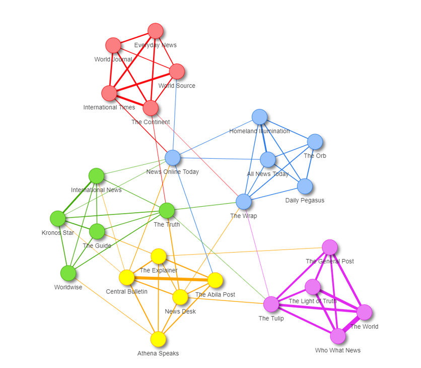
Average Length of Words
knitr::include_graphics('images/5-1-2.png')
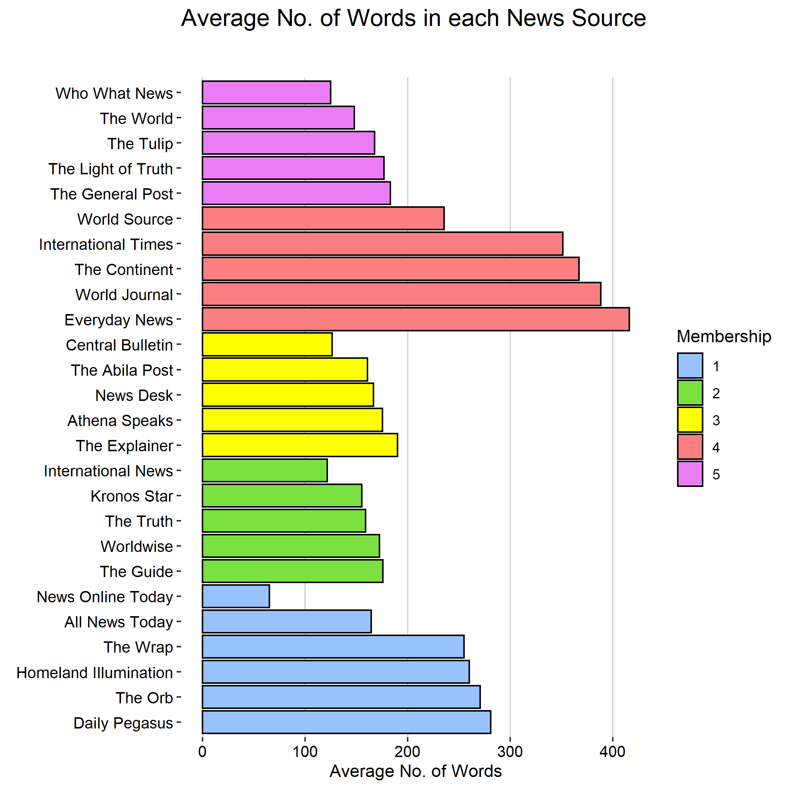
TF-IDF
knitr::include_graphics('images/5-1-3.png')
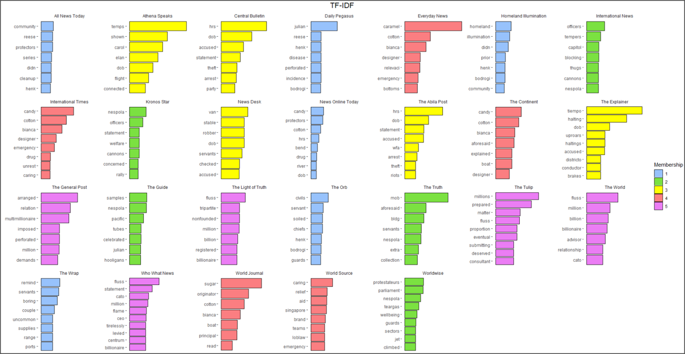
Using TF-IDF, we can see that for Cluster 1: Across the news sources, the most relevant words are related to the designer drug situation in Abila. Cluster 2: Across the news sources, the most relevant words are related to the people of Elodis. Cluster 3: Across the news sources, the most relevant words are related to the designer drug situation in Abila. Cluster 4: Across the news sources, the most relevant words are related to the designer drug situation in Abila. Cluster 5: Across the news sources, the most relevant words are related to the designer drug situation in Abila.
Centrality
knitr::include_graphics('images/5-1-4.png')
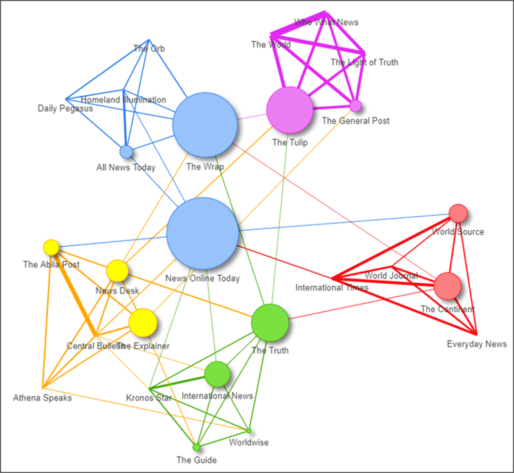
What are the relationships between the primary and derivative sources?
The chart flows below are extracted events that have occurred surrounding GasTech (Hank Fluss’s death), APA (Drug dealings) and POK (arrests).
knitr::include_graphics('images/5-1-5.png')

We can see that Who What News derives the news article from The World. This is evident from the retention of the world “Centrum”. News Online Today as we shall also see in the following analysis are a collection of all the primary new sources. This explains the high betweeness of the node.
The Light of Truth, The General Post and The Tulip are all derivative sources are they not only posted some time later, but also are in fact translations of the original article posted. There might be double translations happening as there is meaning lost.
For e.g. in the texts highlighted in purple, we can see that Centrum, a place in Tethys, has become translated/doubble translated into “centrum of the company” or "center of the company. This also possibly implies that The Tupli and The General Post might be printed/derived from the same language.
The word “wildcatters”, highlighted in green, tells us the Light of Truth, the General Post and The Tulip are all derived from The World as it only appears in that news article.
knitr::include_graphics('images/5-1-9.png')

Hence the primary source in this cluster is The World.
The chart below shows the links between the news sources during the arrests at the Tiskele River in 2005.
knitr::include_graphics('images/5-1-6.png')
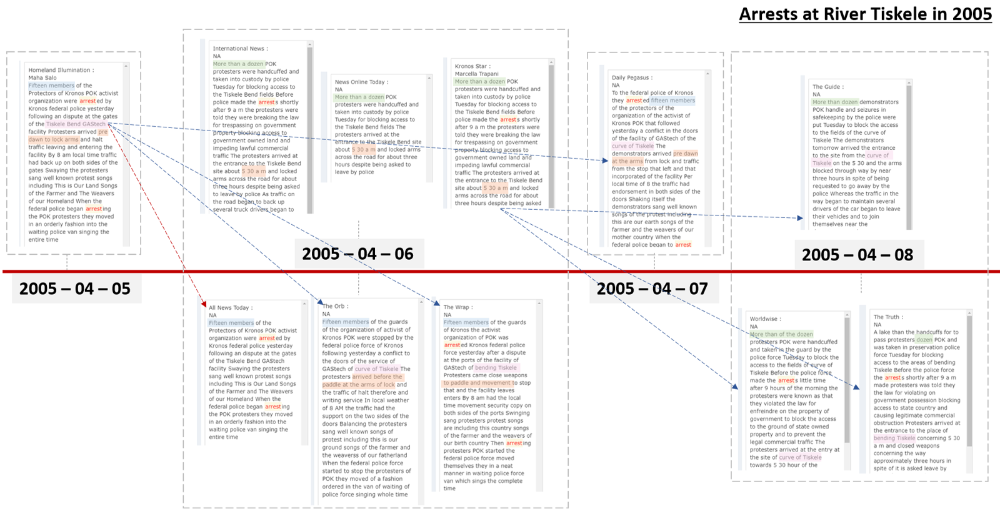
The first documentation of the arrests was noted on the 5th of April 2005 by Homeland Illumination with a specific number 15. The second document of the event was done by International News with more specific capturing of events but give a vague number of “more than a dozen”.
Once that is identified, we can see that within a community, the new sources derive from the primary source. In this case, the primary source is Kronos Star for Community 2 and Homeland Illumination for Community 1.
While Kronos Star and International News was published on the same day, Kronos Star is the primary. (PROVED).
Community 1: News Online Today is short re-write of the article written by Kronos Star, while International News is a longer write-up. The statement by Gastech Spokesman, Rufus Dyrmasi is not included.
Worldwide, The Guide and The Truth are translated/double translated derivations of article by Kronos Star. This is evident from the tranlations of the Tiskele bend highlighted on purple.
Community 2: All News Today is derivation of Homeland Illumination, a re-write.
The Orb and the Wrap and translations of Homeland Illuminations versions. This is evident from the “Tiskele bend” being converted into “curve of Tiskele” and “bending Tiskele”. They might be different languages. The Daily Pegasus is also a derived source of Homeland Illumination due to use of the term “pre-dawn” that is not in both The Orb and The Wrap.
For many such articles, community 1 and 2 are linked.
knitr::include_graphics('images/5-1-7.png')

In 2011, POK was declared as a public threat by the Government of Kronos.
Community 2 and Community 3 reported on that event.
Like discussed previously Community 2’s primary source is Kronos Star. For Community 3, Abila Post is.
As an add-on, The Guide, The Truth and Worldwise are translations.
Community 3: Central Bulletin, News Desk and The Explainer are derivative sources. This is evident from the phrase, “A shop owner in the Siopa district”.
Central Bulletin is a re-write as the grammatical correctness of the phrase “A Shop Owner in the Siopa district” is preserved in addition to other terms.
The derivative sources are: Central Bulletin, News Desk, The Explainer and Athena Speaks. However, The Explainer manages to retain much of the original meaning.
knitr::include_graphics('images/5-1-8.png')

Community 5’s primary source is International Times, as it was the first to publish the article on the drug situation in Abila.
As discussed previously, News Online Today, likely an online source, is a short re-write of the article. The other news sources, The Continent, Everyday News, World Journal are translations of the original article,
5.2 Question 2
knitr::include_graphics('images/5-1-6-1.png')
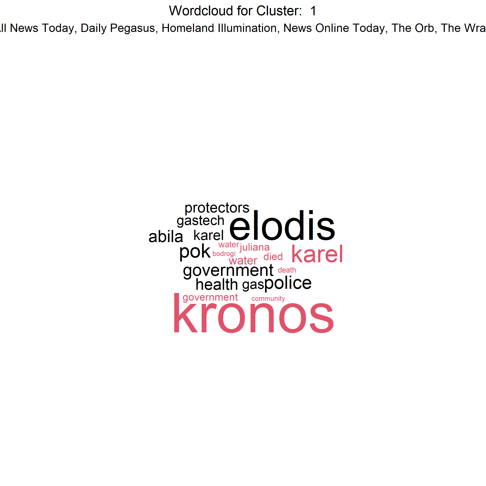
knitr::include_graphics('images/5-1-6-2.png')
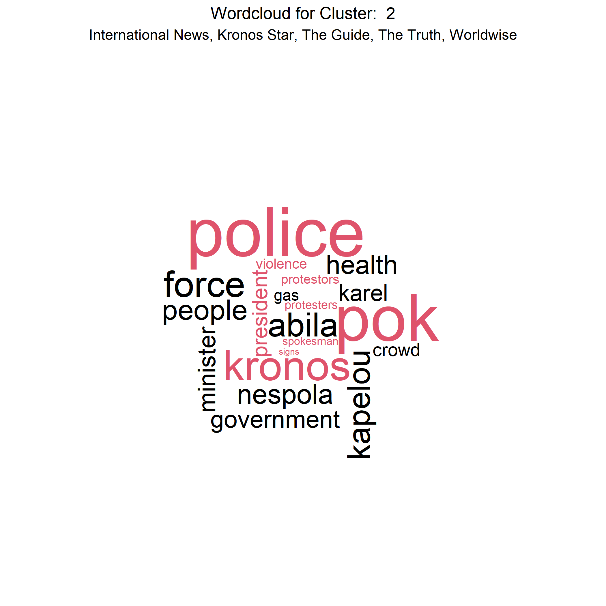
knitr::include_graphics('images/5-1-6-3.png')
knitr::include_graphics('images/5-1-6-4.png')
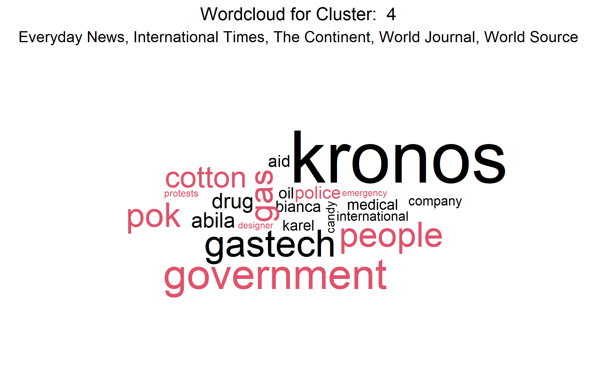
knitr::include_graphics('images/5-1-6-5.png')
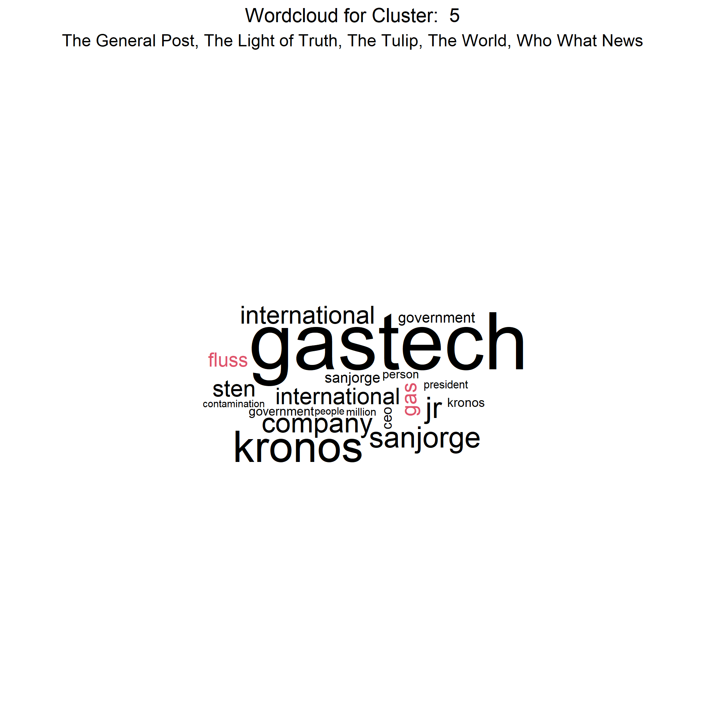
5.3 Question 3
5.4 Question 4